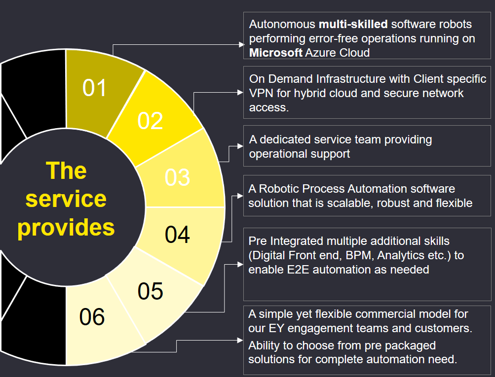
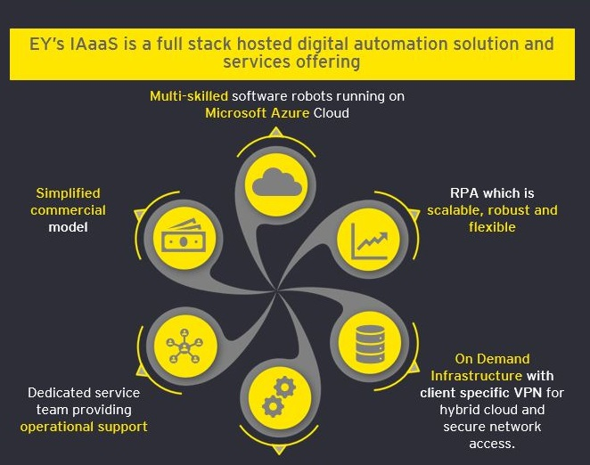

<div style="overflow-x:hidden">
    <nav  class="navbar navbar-default navbar-static-top" style="margin-bottom:-1%;background-image:url('../../assets/digital.gif');position:fixed;width:100%" >
        <div [@changeHeader]=currentHeaderState class="container">
            <div   class="row" style="padding:3.5%">
                
                <h4 style="display: inline;
                font-family: Arial, Helvetica, sans-serif;
                margin-left: 2%;
                font-size: 164%;
                top: 19%;
                left: 5%;
                position: absolute;"><b>I</b>ntelligent <b>A</b>utomation as a <b>S</b>ervice</h4>
            </div>
        </div>

        <div [@changeHeader2]=finalHeaderState class="container" style="height:58px;">
            <div   class="row" style="padding:1%">
                
                <h4 style="    display: inline;
                font-family: Arial, Helvetica, sans-serif;
                font-size: 196%;
                top: 10%;
                left: 6%;
                position: absolute;"><b>IA</b>aa<b>S</b></h4>
            </div>
        </div>
    </nav>

    <div class="container2">
        <div class="bg">
            <div class="row" style = "padding-bottom:5.2%" >
                <div class="col-md-6" style="padding:4%;margin-top:5%" [@changeDivSize]=currentState >
                    <!-- <p  style="font-size: xx-large;font-family: Arial, Helvetica, sans-serif">Intelligent Automation as a Service</p>
                    <p>Superior client technologies are needed to keep pace with the rapid speed of innovation across
                        service lines and industry sectors. EY must also maintain the highest standards of information
                        security,
                        brand protection and reliability.
                    </p>
                    <p>The Client Technology Platform (CTP) is EY’s globally scalable, public cloud based platform
                        ecosystem. We designed it to support pursuit teams looking to deliver technology-based solutions
                        to clients
                        such that it supports reuse, multi-tenancy, and scalability to client’s usage needs change.
                    </p>
                    <p>The CTP incorporates automation technologies and industry-leading security practices. All of this
                        provides service lines with an agile, fast-build and secure platform that can deliver better
                        client
                        solutions at a lower cost.
                    </p> -->
                    
                </div>
                <div class="col-md-6"style="padding:4%;margin-top:5%" [@changeDivSize]=currentState>
                    
                </div>
            </div>
        </div>

        <!-- Begin Yellow bar with button -->
        <div [@changeDivSize]=currentState style="background-color: rgb(255,230,0)">
            <div style="text-align: center;padding-top: 1rem;padding-bottom: 1rem">
                <button mat-button>Subscribe to our Newsletter!</button>
            </div>
        </div>
        <!-- End of Yellow bar with button -->

        <!-- Begin Our value propositio​n​ -->
        <!-- <div class="bg" style="text-align: center">
            <div style="padding-top: 2rem; padding-bottom:2rem">
                <p style="font-size: x-large; color: yellow;"> Our value propositio​n​</p>
                <p>With the EY Client Technology Platform, EY brings its brightest minds together
                    with leading technologies such as robotic process automation (RPA) and
                    analytics – to solve your business problems.
                </p>
                <p>
                    The platform provides a globally accessible infrastructure, platform services, applications and
                    related capabilities.
                    These features serve as flexible and scalable building blocks to meet the evolving business need for
                    digital solutions.
                </p>
            </div>
        </div> -->
        <!-- End of Our value propositio​n​ -->
    </div>

    <button [routerLink] = "['/dashboard']" style = "float:right;position:fixed;bottom:2%;right:2%;background-color: rgb(255,230,0);color:black;border-radius: 21px;border:1px solid black" _ngcontent-wbk-c22="" color="primary" mat-raised-button="" class="mat-raised-button mat-primary"><span class="mat-button-wrapper">Explore Assets</span><div class="mat-button-ripple mat-ripple" matripple=""></div><div class="mat-button-focus-overlay"></div></button>
</div>
